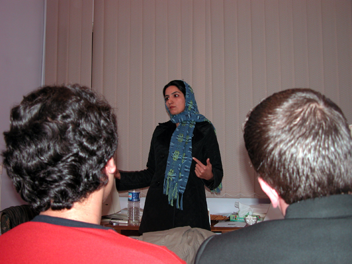
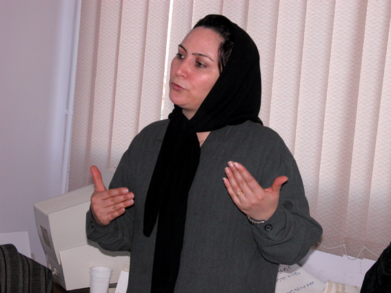
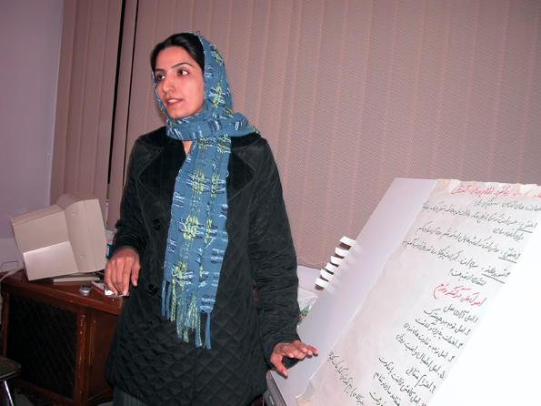
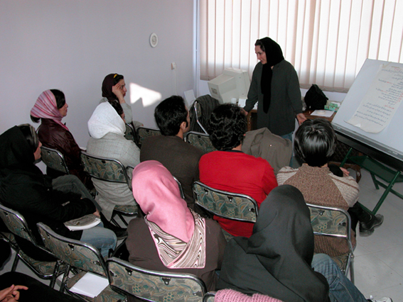

|
|

كارگاه آموزشي كمپين يك ميليون امضاء در مشهد
راحله عسگری زاده
شنبه19 اسفند 1385
شهر مشهد با هواي بهاري اش ، سوم اسفند ماه ميزبان اعضاي كمپين بود. براي هماهنگي محل كارگاه و با دلهره و نگراني براي كم بودن فضا، يك روز زودتر از زهره و زارا به مشهد رفتم . يكي از اقوام قول داده بود دفتر کوچکش را برای برگزاری کارگاه در اختيارمان بگذارد.

ساچلي (از داوطلبين فعال مشهدي ) ميهمانان كارگاه را دعوت كرده بود و تا قبل از آمدن شركت كنندگان تلفني پيگير كساني بود كه براي شركت در كارگاه قول مساعد كارگاه قرار بود ساعت 2 برگزار شود ، عقربه ها مي چرخيد و جز 5-4 نفر كس ديگري نيامده بود . نگراني ساچلی به خستگي راه ما اضافه شد و نگاه هاي ناراضي و خسته ما را كه راه طولاني تهران – مشهد را طي كرده بوديم به اخم تبديل كرد.

کم کم دوستان ديگر هم از راه رسيدند و کارگاه با کمی تاخیر شروع شد.در بخش اول كارگاه ، بعد از معارفه ، زارا امجديان تاريخچه مختصري از فعاليتهاي جنبش زنان و علت تشكيل كمپين را توضيح داد . شركت كنندگان در كارگاه كه بیشترشان از دانشجويان فعال در نشريات دانشجويي بودند ، كمابيش از تجمع 22 خرداد سال های 1384-85 اطلاع داشتند و تعداد زيادي از آنها سايت كمپين را قبل از فيلتر شدن ! ديده بودند .
زهره ارزني با اخلاق خوش و مثال هاي دلنشين اش بخش حقوقي كارگاه را آغاز كرد .مشاركت شركت كنندگان در اين بخش نسبتا بهتر بود .

در زمان استراحت بين دوبخش كارگاه تعدادي از شركت كنندگان كه علاقه بيشتري داشتند ، سوالهايشان را مطرح كردند.هنگامي كه زارا روشهاي ارتباط برقرار كردن و راهكارهاي جمع آوري امضا را توضيح مي داد ،بعضي از دوستان نكته هايي را كه مهمتر مي دانستند يادداشت مي كردند.
خانم مسني كه در بين شركت كنندگان بود با مشاركت در بحث ها لبخند رضايت را بر چهره مهربان زارا نشانده بود .

كارگاه مشهد كمي ديرتر از حد معمول تمام شد .زهره ارزني ، زارا ، ساچلي و اشكان (يكي از شركت كنندگان در كارگاه ) پس از مرتب كردن محل برگزاري كارگاه هركدام به سويي رفتند . زارا و زهره خسته به سوي تهران و ساچلي و اشكان اميدوار به خانه هايشان . با اميد به اينكه اين تلاش به ثمر نشيند و 15 نفر شركت كننده در كارگاه مشهد بتوانند كمپين را در اين شهر به ميان مردم ببرند .